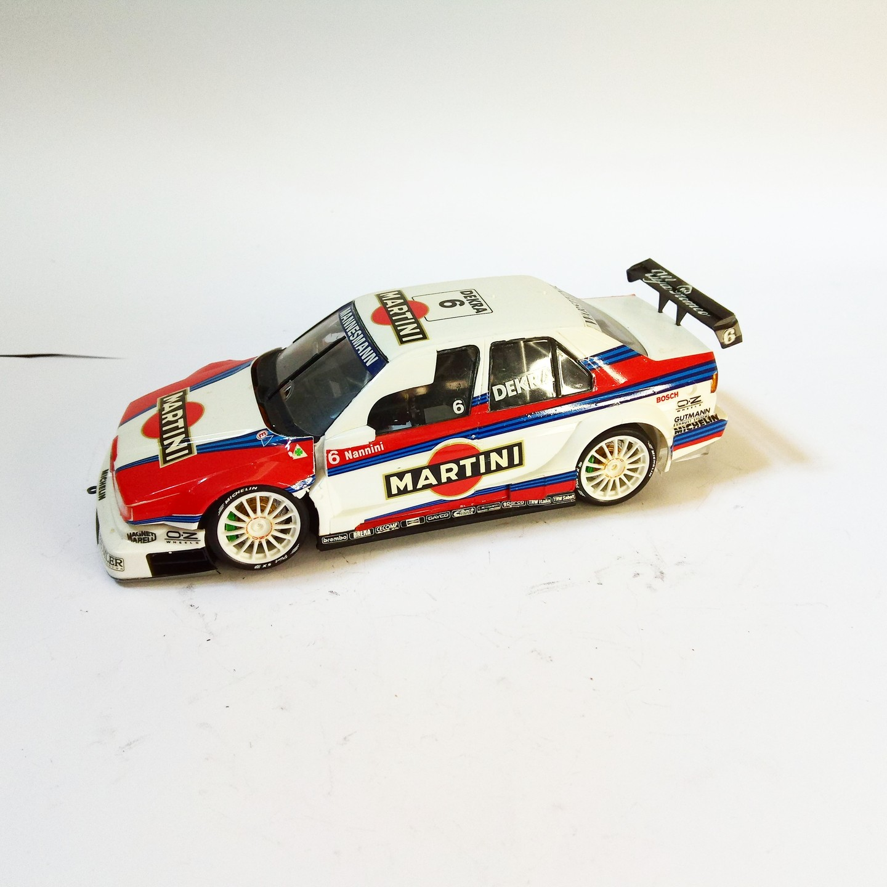

Auto e veicoli stradali · scale model archive
Alfa Romeo 155 V6 TI Martini
Alfa Romeo 155 V6 TI Martini — Kit: Tamiya, Scale: 1/24. Raced in DTM 1995, nice powerful car #1/24 #Tamiya #scalemodel

Photo gallery
English description
Raced in DTM 1995, nice powerful car
#1/24 #Tamiya #scalemodel
Descrizione italiana
Corse nel DTM 1995, nice powerful auto.